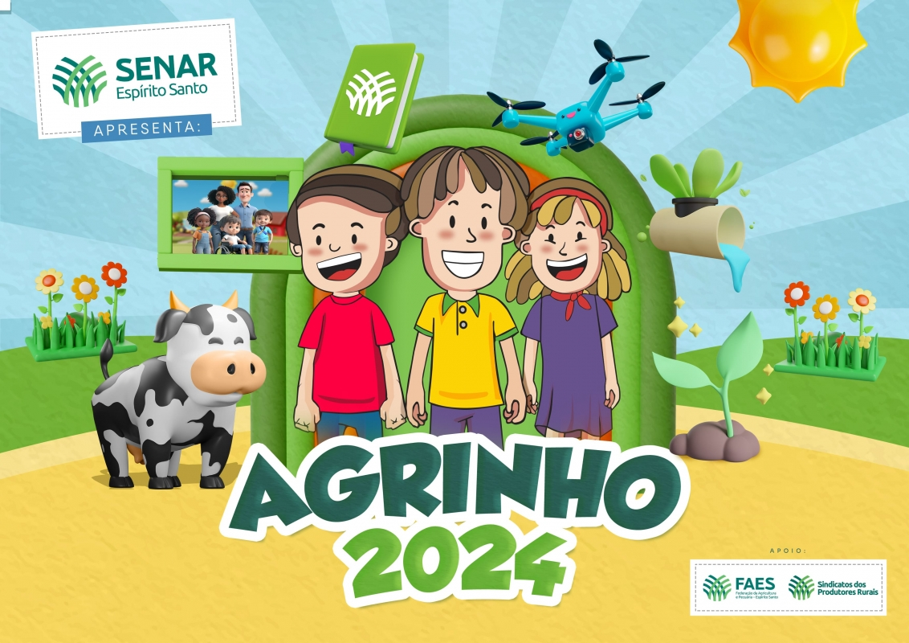
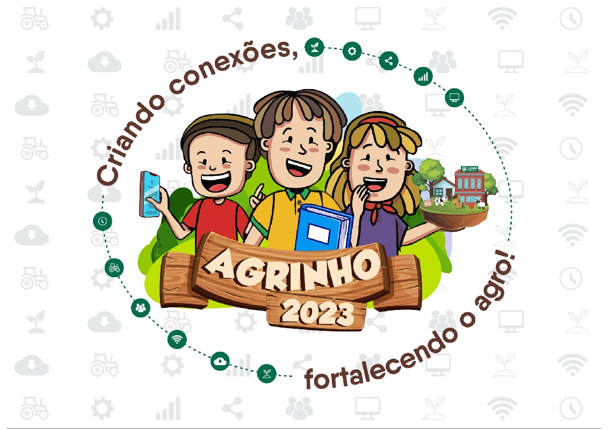
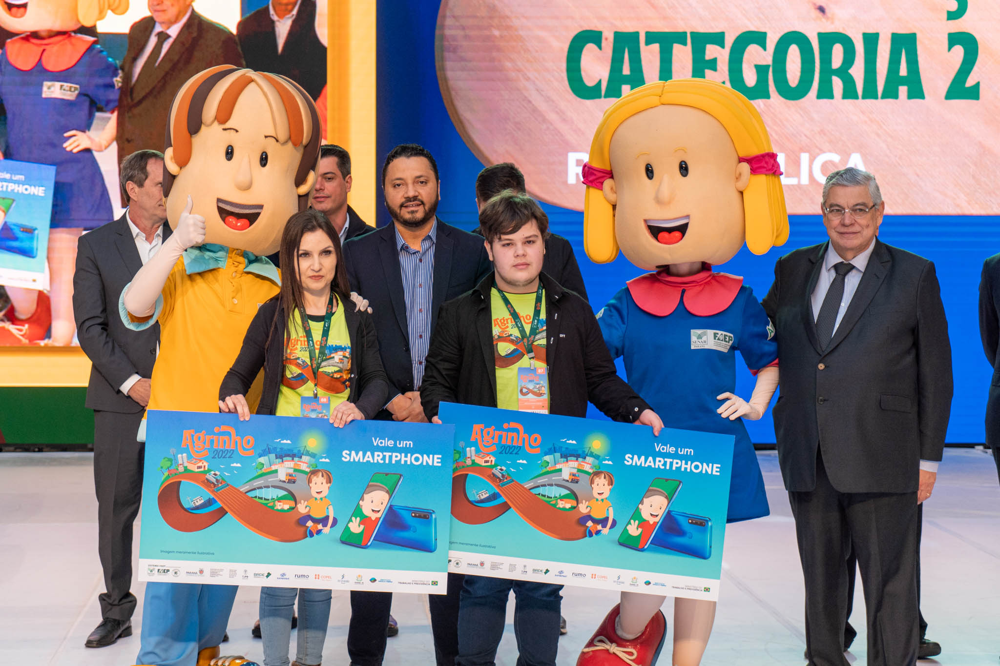

Introdução

O Agrinho é um programa educacional e social criado para promover o desenvolvimento sustentável e a inclusão social no meio rural. A iniciativa visa integrar a educação ao cotidiano dos alunos, proporcionando um ambiente de aprendizado mais próximo da realidade agrícola.
Como Funciona

O Agrinho funciona através de uma série de atividades e projetos que envolvem a comunidade escolar e os agricultores locais. O programa inclui:
- Oficinas Educativas: Atividades práticas que ensinam técnicas agrícolas sustentáveis.
- Projetos Comunitários: Iniciativas que envolvem a participação dos alunos em projetos de desenvolvimento local.
- Parcerias com Agricultores: Colaboração entre escolas e agricultores para troca de conhecimentos e práticas.
Benefícios

Os principais benefícios do Agrinho incluem:
- Educação Prática: Aprendizagem que integra teoria e prática no contexto real.
- Desenvolvimento Sustentável: Promoção de práticas agrícolas que respeitam o meio ambiente.
- Inclusão Social: Melhoria das condições de vida e trabalho nas comunidades rurais.
Galeria


Contato
Para mais informações sobre o Agrinho, entre em contato conosco:
Email: contato@agrinho.org